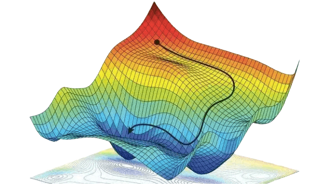

Visualizing Gradient Descent Methods
About
Project Motivation
Descent methods are powerful optimization algorithms that are widely used in machine learning. Even though such methods are iterative, it is difficult to fully compare the paths different methods take in terms of points in space to reach optimal solutions. There are metrics that allow for quantitative comparison, but we believe that visualization is a powerful tool for learning. Many of the visualizations currently available are static images, have low customizability, or are limited in interactiveness.We wanted to see if we could address these issues and allow for those learning about descent methods to better understand how these methods vary in effectiveness depending on various factors. Specifically, we sought to create a visualization leveraging user interaction to adjust the view and parameters of the optimization alongside animation of steps to show how descent methods arrive at optimal solutions.
What is Gradient Descent?
Constrained optimization seeks to minimize a cost function within its feature space. From an initialization point, gradient descent algorithms move iteratively in directions according to the descent given until the algorithm converges to a local minimum. For instance, in machine learning, this underlies the process in which model parameters are updated. We see this in coefficients for linear regression, and weights and biases in neural networks. The choice of which gradient descent method and its hyperparameter values can determine if cost minimization is likely to be achieved in an appropriate amount of time.
Created By Dao Ming Lee and Nova Zhang